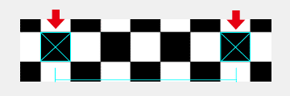

StereoCameraCalibrator is a tool for manually setting the calibration data for the stereo cameras. This tool can set the following values.
| Parameter Name | Setting Name in the Tool | Member in the StereoCameraCalibrationData Structure |
|---|---|---|
| Scaling factor | scale | Scale |
| Angle of rotation around the light axis | rotZ | RotationZ |
| Amount of horizontal translation | transX | TranslationX |
| Amount of vertical translation | transY | TranslationY |
| Parameter Name | Setting Name in the Tool | Member in the StereoCameraCalibrationData Structure |
|---|---|---|
| Angle of view of the left camera | angleL | AngleOfViewLeft |
| Angle of view of the right camera | angleR | AngleOfViewRight |
Config tool and reset settings.
Print the chess chart (chesschart-14mm-16x10.pdf) stored in the documents/api/tools folder. Place this chart 250 mm away from the CTR camera module. Both the camera and the chart must be horizontal.
Note that the calibrated values will be erroneous if the distance between the camera module and the chart is not 250 mm, or if the camera module and chart are not both horizontal.
Note:
Be sure to print the chart at actual size, because any scaling makes correct calibration impossible.
Use Left/Right on the +Control Pad to select the setting to calibrate, and then use Up/Down to change its value. (For example, if you press Right on the +Control Pad while rotZ is selected, the cursor moves to transX on the next line.))
Adjust the values of scale, rotZ, transX, and transY so that the chess chart in the left image exactly overlaps the chess chart in the right image. For how to set angleL and angleR, see How to Set the Angles of View.
Press the A Button to save all the calibrated values to the system as calibration data. Note that all calibration values are saved, not just the setting you have currently selected.
Press the B Button to cancel any adjustments you have made to the selected settings and reset them to the original values.
Just as when calibrating the position offsets, print the chess chart (chesschart-14mm-16x10.pdf) stored in the documents/api/tools folder. Place this chart 250mm away from the CTR camera module.
To calibrate the left camera's angle of view, select angleL and press the B Button. To do the same for the right camera, select angleR and press the B Button.
The upper screen displays only the image for the selected side, overlaid with two square icons. The calibration value is the default value: 66.0.
If you adjust the value with Up/Down on the +Control Pad, the two icons overlaid on the image move closer or farther apart. Adjust the distance between these two icons so that they lie exactly on two squares of the chess chart whose centers are 84mm apart. Each square is 14 mm wide, so the squares you want the icons to lie on have 5 full squares between them.
(See the following figure.)
Adjust the value so that the icons lie exactly on the two end squares.

If the size of the chess square does not perfectly match the size of the icon, align the center of the icon with the center of the square.
Press the A Button to save all the calibrated values to the system as calibration data. Note that all calibration values are saved, not just the setting you have currently selected.
Press the B Button to cancel any adjustments you have made to the selected settings and reset them to the original values.
CONFIDENTIAL